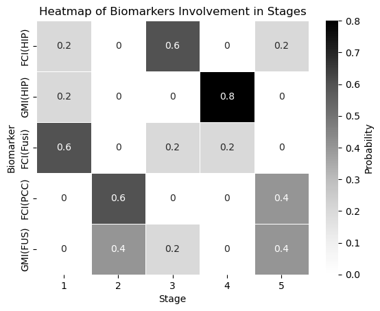
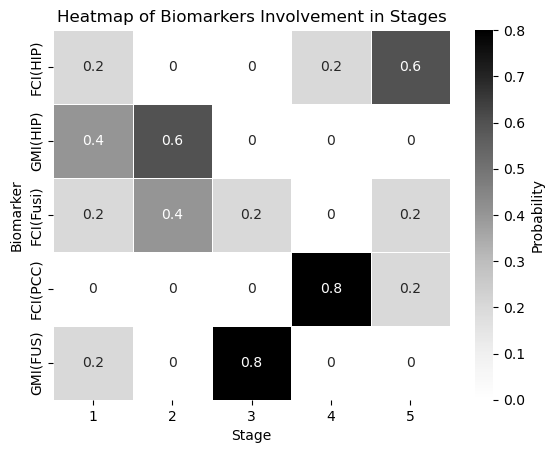
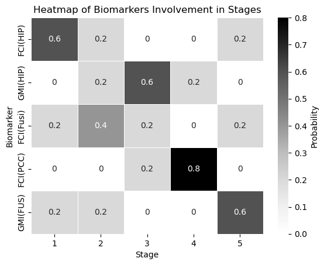

Apply Algorithm to Chen’s Data#
import pandas as pd
import numpy as np
import seaborn as sns
import matplotlib.pyplot as plt
from scipy.stats import norm
from scipy.stats import mode
from sklearn.cluster import KMeans
iterations = 20
burn_in = 10
thining = 2
Preprocess data#
df = pd.read_excel("data/Chen2016Data.xlsx")
df.rename(columns={df.columns[0]: 'participant_category', df.columns[1]: 'participant'}, inplace=True)
df['diseased'] = df.apply(lambda row: row.participant_category != 'CN', axis = 1)
df = pd.melt(df, id_vars=['participant_category', "participant", "timestamp", 'diseased'],
value_vars=["FCI(HIP)", "GMI(HIP)", "FCI(Fusi)", "FCI(PCC)", "GMI(FUS)"],
var_name='biomarker', value_name='measurement')
# convert participant id
num_participant = len(df.participant.unique())
participant_string_id_dic = dict(zip(df.participant.unique(), [_ for _ in range(num_participant)]))
df['participant'] = df.apply(lambda row: participant_string_id_dic[row.participant], axis = 1 )
data_we_have = df
data_we_have.head()
| participant_category | participant | timestamp | diseased | biomarker | measurement | |
|---|---|---|---|---|---|---|
| 0 | CN | 0 | 6/2/2011 | False | FCI(HIP) | -2.544567 |
| 1 | CN | 1 | 9/2/2011 | False | FCI(HIP) | -1.603212 |
| 2 | CN | 2 | 10/11/2011 | False | FCI(HIP) | -4.716009 |
| 3 | CN | 3 | 8/8/2011 | False | FCI(HIP) | -4.232625 |
| 4 | CN | 4 | 11/28/2011 | False | FCI(HIP) | 3.628361 |
## These are the healthy participants (Participant ID)
non_diseased_participants = list(set(data_we_have.loc[data_we_have.diseased == False].participant))
len(non_diseased_participants), len(set(data_we_have.participant))
(45, 144)
biomarkers = list(set(data_we_have.biomarker))
biomarkers
['GMI(FUS)', 'FCI(HIP)', 'FCI(Fusi)', 'FCI(PCC)', 'GMI(HIP)']
num_biomarkers = len(biomarkers)
num_biomarkers
5
Get Theta and Phi Estimates Using k-means#
def get_theta_phi(data, biomarker, kmeans_setup):
"""To get theta and phi parametesr
Input:
- data: data we have right now, without access to S_n and kj
- biomarker: a string of biomarker name
Output:
mean and std of theta and phi
"""
# two empty clusters to strore measurements
clusters = [[] for _ in range(2)]
# dataframe for this biomarker
biomarker_df = data[data['biomarker'] == biomarker].reset_index(drop=True)
measurements = np.array(biomarker_df['measurement'])
# reshape to satisfy sklearn requirements
measurements = measurements.reshape(-1, 1)
# dataframe for non-diseased participants
healthy_df = biomarker_df[biomarker_df['diseased'] == False]
kmeans = kmeans_setup.fit(measurements)
predictions = kmeans.predict(measurements)
# to store measurements into their cluster
for i, prediction in enumerate(predictions):
clusters[prediction].append(measurements[i][0])
# which cluster are healthy participants in
healthy_predictions = kmeans.predict(measurements[healthy_df.index])
# the mode of the above predictions will be the phi cluster index
phi_cluster_idx = mode(healthy_predictions, keepdims=False).mode
theta_cluster_idx = 1 - phi_cluster_idx
theta_mean, theta_std = np.mean(clusters[theta_cluster_idx]), np.std(clusters[theta_cluster_idx])
phi_mean, phi_std = np.mean(clusters[phi_cluster_idx]), np.std(clusters[phi_cluster_idx])
return theta_mean, theta_std, phi_mean, phi_std
kmeans_setup = KMeans(n_clusters=2, random_state=0, n_init="auto")
# empty list of dictionaries to store the estimates
means_stds_estimate_dict_list = []
for biomarker in biomarkers:
dic = {'biomarker': biomarker}
theta_mean, theta_std, phi_mean, phi_std = get_theta_phi(data_we_have, biomarker, kmeans_setup)
dic['theta_mean'] = theta_mean
dic['theta_std'] = theta_std
dic['phi_mean'] = phi_mean
dic['phi_std'] = phi_std
means_stds_estimate_dict_list.append(dic)
theta_phi_kmeans = pd.DataFrame(means_stds_estimate_dict_list)
theta_phi_kmeans
| biomarker | theta_mean | theta_std | phi_mean | phi_std | |
|---|---|---|---|---|---|
| 0 | GMI(FUS) | 0.457107 | 0.044667 | 0.569150 | 0.035734 |
| 1 | FCI(HIP) | 2.794918 | 2.983066 | -5.546734 | 2.887983 |
| 2 | FCI(Fusi) | -19.767018 | 4.183856 | -10.216922 | 3.021294 |
| 3 | FCI(PCC) | 11.583134 | 3.358987 | 1.781998 | 3.292063 |
| 4 | GMI(HIP) | 0.341778 | 0.054571 | 0.482245 | 0.037704 |
Metropolis-Hastings Algorithm Implementation Soly Dependent on Theta_Phi_Kmeans#
def fill_up_pdata(pdata, k_j):
'''Fill up a single participant's data using k_j; basically add two columns:
k_j and affected
Note that this function assumes that pdata already has the S_n column
Input:
- pdata: a dataframe of ten biomarker values for a specific participant
- k_j: a scalar
'''
data = pdata.copy()
data['k_j'] = k_j
data['affected'] = data.apply(lambda row: row.k_j >= row.S_n, axis = 1)
return data
def compute_single_measurement_likelihood(theta_phi, biomarker, affected, measurement):
'''Computes the likelihood of the measurement value of a single biomarker
We know the normal distribution defined by either theta or phi
and we know the measurement. This will give us the probability
of this given measurement value.
input:
- theta_phi: the dataframe containing theta and phi values for each biomarker
- biomarker: an integer between 0 and 9
- affected: boolean
- measurement: the observed value for a biomarker in a specific participant
output: a scalar
'''
biomarker_params = theta_phi[theta_phi.biomarker == biomarker].reset_index()
mu = biomarker_params['theta_mean'][0] if affected else biomarker_params['phi_mean'][0]
std = biomarker_params['theta_std'][0] if affected else biomarker_params['phi_std'][0]
var = std**2
likelihood = np.exp(-(measurement - mu)**2/(2*var))/np.sqrt(2*np.pi*var)
return likelihood
def compute_likelihood(pdata, k_j, theta_phi):
'''This implementes the formula of https://ebm-book2.vercel.app/distributions.html#known-k-j
This function computes the likelihood of seeing this sequence of biomarker values for a specific participant
'''
data = fill_up_pdata(pdata, k_j)
likelihood = 1
for i, row in data.iterrows():
biomarker = row['biomarker']
measurement = row['measurement']
affected = row['affected']
likelihood *= compute_single_measurement_likelihood(
theta_phi, biomarker, affected, measurement)
return likelihood
def metropolis_hastings_with_theta_phi_kmeans(
data_we_have, iterations, theta_phi, non_diseased_participants,
burn_in, thining,
):
'''Implement the metropolis-hastings algorithm
Inputs:
- data: data_we_have
- iterations: number of iterations
Outputs:
- best_order: a numpy array
- best_likelihood: a scalar
'''
num_participants = len(data_we_have.participant.unique())
num_biomarkers = len(data_we_have.biomarker.unique())
num_stages = num_biomarkers + 1
all_dicts = []
# initialize an ordering and likelihood
# note that it should be a random permutation of numbers 1-10
best_order = np.random.permutation(np.arange(1, num_stages))
biomarker_names = np.array(list(data_we_have.biomarker.unique()))
biomarker_best_order_dic = dict(zip(biomarker_names, best_order))
best_likelihood = -np.inf
# initialize participant_stages
# note that high should be num_stages; otherwise, no participants will be in the stage of 10
participant_stages = np.random.randint(low = 0, high = num_stages, size = num_participants)
participant_stages[non_diseased_participants] = 0
for _ in range(iterations):
new_order = best_order.copy()
# randomly select two indices
a, b = np.random.choice(num_biomarkers, 2, replace=False)
# swapping the order
new_order[a], new_order[b] = new_order[b], new_order[a]
# biomarker - order dict
ordering_dic = dict(zip(biomarker_names, new_order))
# fill up S_n column using the ordering dict
# copy first in order not to change data_we_have
data = data_we_have.copy()
# now data_we_have has S_n column
data['S_n'] = data.apply(lambda row: ordering_dic[row['biomarker']], axis = 1)
all_participant_ln_likelihood = 0
for p in range(num_participants):
# copy participant_stages
participant_stages_copy = participant_stages.copy()
# this participant data
pdata = data[data.participant == p].reset_index(drop=True)
"""If this participant is not diseased (i.e., if we know k_j is equal to 0)
We still need to compute the likelihood of this participant seeing this sequence of biomarker data
but we do not need to estimate k_j like below
We still need to compute the likelihood because we need to add it to all_participant_ln_likelihood
"""
if p in non_diseased_participants:
# the following will update pdata's kj and affect columns
this_participant_likelihood = compute_likelihood(
pdata, k_j = 0, theta_phi = theta_phi)
this_participant_ln_likelihood = np.log(this_participant_likelihood)
else:
# initiaze stage_likelihood
stage_likelihood = np.zeros(num_stages)
for k_j in range(num_stages):
# even though data above has everything, it is filled up by random stages
# we don't like it and want to know the true k_j. All the following is to update participant_stages
# likelihood for this participant to have this specific sequence of biomarker values
participant_likelihood = compute_likelihood(pdata, k_j, theta_phi)
# update each stage likelihood for this participant
stage_likelihood[k_j] = participant_likelihood
likelihood_sum = np.sum(stage_likelihood)
normalized_stage_likelihood = [l/likelihood_sum for l in stage_likelihood]
sampled_stage = np.random.choice(np.arange(num_stages), p = normalized_stage_likelihood)
participant_stages_copy[p] = sampled_stage
# if participant is at sample_stage,
# what is the likelihood of this participant having this sequence of biomarker data:
this_participant_likelihood = stage_likelihood[sampled_stage]
# then, update all_participant_likelihood
if this_participant_likelihood == 0:
this_participant_ln_likelihood = np.log(this_participant_likelihood + 1e20)
else:
this_participant_ln_likelihood = np.log(this_participant_likelihood)
"""
All the codes in between are calculating this_participant_ln_likelihood. If we already know kj=0, then
it's very simple. If kj is unknown, we need to calculate the likelihood of seeing this sequence of biomarker
data at different stages, and get the relative likelihood before we get a sampled stage. Then we calculate
this_participant_ln_likelihood again.
"""
all_participant_ln_likelihood += this_participant_ln_likelihood
"""
The key to both `metropolis_hastings_with_theta_phi_kmeans` and `metropolis_hastings` is to
compare best_likelihood and the likelihood of all participants having specific sequences of measurements
based on the assumed S_n.
The difference lies in how to calculate all_participant_ln_likelihood.
`metropolis_hastings_with_theta_phi_kmeans` tries to obtain k_j and calculate each likelihood exactly
whereas `metropolis_hastings` did not obtain exact k_j and calculate the average likelihood instead
"""
acceptance_ratio = np.exp(all_participant_ln_likelihood - best_likelihood)
random_number = np.random.rand()
if random_number < acceptance_ratio:
best_likelihood = all_participant_ln_likelihood
biomarker_best_order_dic = ordering_dic
participant_stages = participant_stages_copy
if _ >= burn_in and _ % thining == 0:
all_dicts.append(ordering_dic)
if (_+1) % 10 == 0:
print(f"iteration {_ + 1} done")
return biomarker_best_order_dic, participant_stages, all_dicts
biomarker_best_order_dic, participant_stages, all_dicts = metropolis_hastings_with_theta_phi_kmeans(
data_we_have, iterations, theta_phi = theta_phi_kmeans,
non_diseased_participants = non_diseased_participants,
burn_in = burn_in, thining = thining, )
iteration 10 done
iteration 20 done
def get_biomarker_stage_probability(df, num_biomarkers):
# Create an empty list to hold dictionaries
dict_list = []
# for each biomarker
for col in df.columns:
dic = {"biomarker": col}
# get the frequency of biomarkers
stage_counts = df[col].value_counts()
# for each stage
for i in range(1, num_biomarkers + 1):
# get stage:prabability
dic[i] = stage_counts.get(i, 0)/len(df)
dict_list.append(dic)
dff = pd.DataFrame(dict_list)
dff.set_index(dff.columns[0], inplace=True)
return dff
df = pd.DataFrame(all_dicts)
biomarker_stage_probability_df = get_biomarker_stage_probability(df, num_biomarkers)
sns.heatmap(biomarker_stage_probability_df, annot=True, cmap="Greys", linewidths=.5, cbar_kws={'label': 'Probability'})
plt.xlabel('Stage')
plt.ylabel('Biomarker')
plt.title('Heatmap of Biomarkers Involvement in Stages')
plt.show()

Estimate Theta and Phi Based on Conjugate Priors#
def estimate_params_exact(m0, n0, s0_sq, v0, data):
'''This is to estimate means and vars based on conjugate priors
Inputs:
- data: a vector of measurements
- m0: prior estimate of $\mu$.
- n0: how strongly is the prior belief in $m_0$ is held.
- s0_sq: prior estimate of $\sigma^2$.
- v0: prior degress of freedome, influencing the certainty of $s_0^2$.
Outputs:
- mu estiate, std estimate
'''
# Data summary
sample_mean = np.mean(data)
sample_size = len(data)
sample_var = np.var(data, ddof=1) # ddof=1 for unbiased estimator
# Update hyperparameters for the Normal-Inverse Gamma posterior
updated_m0 = (n0 * m0 + sample_size * sample_mean) / (n0 + sample_size)
updated_n0 = n0 + sample_size
updated_v0 = v0 + sample_size
updated_s0_sq = (1 / updated_v0) * ((sample_size - 1) * sample_var + v0 * s0_sq +
(n0 * sample_size / updated_n0) * (sample_mean - m0)**2)
updated_alpha = updated_v0/2
updated_beta = updated_v0*updated_s0_sq/2
# Posterior estimates
mu_posterior_mean = updated_m0
sigma_squared_posterior_mean = updated_beta/updated_alpha
mu_estimation = mu_posterior_mean
std_estimation = np.sqrt(sigma_squared_posterior_mean)
return mu_estimation, std_estimation
def get_estimated_means_stds_df(biomarkers, data_we_have, theta_phi_kmeans):
'''To get estimated parameters, returns a Pandas DataFrame
Input:
- biomarkers: biomarkers
- data_we_have: participants data filled with initial or updated participant_stages
Output:
- estimate_means_std_df, just like means_stds_df, containing the estimated mean and std_dev for
distribution of biomarker values when the biomarker is affected and not affected
Note that, there is one bug we need to fix: Sometimes, data_full might have only one observation or no ob
'''
# empty list of dictionaries to store the estimates
means_stds_estimate_dict_list = []
for biomarker in biomarkers:
dic = {'biomarker': biomarker} # Initialize dictionary outside the inner loop
for affected in [True, False]:
data_full = data_we_have[(data_we_have.biomarker == biomarker) & (
data_we_have.affected == affected)]
if len(data_full) > 1:
measurements = data_full.measurement
mu_estimate, std_estimate = estimate_params_exact(
m0 = 0, n0 = 1, s0_sq = 1, v0 = 1, data=measurements)
if affected:
dic['theta_mean'] = mu_estimate
dic['theta_std'] = std_estimate
else:
dic['phi_mean'] = mu_estimate
dic['phi_std'] = std_estimate
# If there is only one observation or not observation at all, resort to theta_phi_kmeans
# YES, IT IS POSSIBLE THAT DATA_FULL HERE IS NULL
# For example, if a biomarker indicates stage of (num_biomarkers), but all participants' stages
# are smaller than that stage; so that for all participants, this biomarker is not affected
else:
# DONT FORGTE RESET_INDEX; this because you are acessing [0]
theta_phi_kmeans_biomarker_row = theta_phi_kmeans[
theta_phi_kmeans.biomarker == biomarker].reset_index(drop=True)
if affected:
dic['theta_mean'] = theta_phi_kmeans_biomarker_row['theta_mean'][0]
dic['theta_std'] = theta_phi_kmeans_biomarker_row['theta_std'][0]
else:
dic['phi_mean'] = theta_phi_kmeans_biomarker_row['phi_mean'][0]
dic['phi_std'] = theta_phi_kmeans_biomarker_row['phi_std'][0]
# print(f"biomarker {biomarker} done!")
means_stds_estimate_dict_list.append(dic)
estimate_means_stds_df = pd.DataFrame(means_stds_estimate_dict_list)
return estimate_means_stds_df
def add_kj_and_affected(data_we_have, participant_stages, num_participants):
'''This is to fill up data_we_have.
Basically, add two columns: k_j, and affected, based on the initial or updated participant_stages
Note that we assume here we've already got S_n
Inputs:
- data_we_have
- participant_stages: np array
- participants: 0-99
'''
participant_stage_dic = dict(zip(np.arange(0, num_participants), participant_stages))
data_we_have['k_j'] = data_we_have.apply(lambda row: participant_stage_dic[row.participant], axis = 1)
data_we_have['affected'] = data_we_have.apply(lambda row: row.k_j >= row.S_n, axis = 1)
return data_we_have
def metropolis_hastings_unknown_theta_phi(
data_we_have, iterations, non_diseased_participants, burn_in, thining, theta_phi_kmeans):
num_participants = len(data_we_have.participant.unique())
num_biomarkers = len(data_we_have.biomarker.unique())
biomarker_names = np.array(list(data_we_have.biomarker.unique()))
all_dicts = []
# initialize an ordering and likelihood
# note that it should be a random permutation of numbers 1-10
best_order = np.random.permutation(np.arange(1, num_biomarkers+1))
biomarker_best_order_dic = dict(zip(biomarker_names, best_order))
best_likelihood = -np.inf
# initialize participant_stages
# note that high should be num_biomarkers + 1; otherwise, no participants will be in the stage of 10
participant_stages = np.random.randint(low = 0, high = num_biomarkers + 1, size = num_participants)
participant_stages[non_diseased_participants] = 0
for _ in range(iterations):
participant_stages_copy = participant_stages.copy()
# when we update best_order below,
# in each iteration, new_order will also update
new_order = best_order.copy()
# randomly select two indices
a, b = np.random.choice(num_biomarkers, 2, replace=False)
# swaping the order
new_order[a], new_order[b] = new_order[b], new_order[a]
# likelihood of seeing all participants' data
# biomarker - order dict
ordering_dic = dict(zip(biomarker_names, new_order))
# fill up S_n column using the ordering dict
# copy first in order not to change data_we_have
data = data_we_have.copy()
# now data_we_have has S_n column
data['S_n'] = data.apply(lambda row: ordering_dic[row['biomarker']], axis = 1)
# add kj and affected based on the initial randomized participant_stages
data = add_kj_and_affected(data, participant_stages_copy, num_participants)
# print(data.head())
# get estimated_theta_phi
estimated_theta_phi = get_estimated_means_stds_df(biomarker_names, data_we_have=data, theta_phi_kmeans=theta_phi_kmeans)
all_participant_ln_likelihood = 0
for p in range(num_participants):
# this participant data
pdata = data[data.participant == p].reset_index(drop=True)
"""If this participant is not diseased (i.e., if we know k_j is equal to 0)
We still need to compute the likelihood of this participant seeing this sequence of biomarker data
but we do not need to estimate k_j like below
We still need to compute the likelihood because we need to add it to all_participant_ln_likelihood
"""
if p in non_diseased_participants:
this_participant_likelihood = compute_likelihood(
pdata, k_j = 0, theta_phi = estimated_theta_phi)
this_participant_ln_likelihood = np.log(this_participant_likelihood)
else:
# initiaze stage_likelihood
stage_likelihood = np.zeros(num_biomarkers + 1)
for k_j in range(num_biomarkers +1):
# even though data above has everything, it is filled up by random stages
# we don't like it and want to know the true k_j. All the following is to update participant_stages
# likelihood for this participant to have this specific sequence of biomarker values
participant_likelihood = compute_likelihood(pdata, k_j, estimated_theta_phi)
# update each stage likelihood for this participant
stage_likelihood[k_j] = participant_likelihood
likelihood_sum = np.sum(stage_likelihood)
normalized_stage_likelihood = [l/likelihood_sum for l in stage_likelihood]
sampled_stage = np.random.choice(np.arange(num_biomarkers + 1), p = normalized_stage_likelihood)
participant_stages_copy[p] = sampled_stage
# if participant is in sampled_stage, what is the likelihood of seeing this sequence of biomarker data:
this_participant_likelihood = stage_likelihood[sampled_stage]
# then, update all_participant_likelihood
if this_participant_likelihood == 0:
this_participant_ln_likelihood = np.log(this_participant_likelihood + 1e20)
else:
this_participant_ln_likelihood = np.log(this_participant_likelihood)
all_participant_ln_likelihood += this_participant_ln_likelihood
acceptance_ratio = np.exp(all_participant_ln_likelihood - best_likelihood)
random_number = np.random.rand()
if random_number < acceptance_ratio:
best_likelihood = all_participant_ln_likelihood
biomarker_best_order_dic = ordering_dic
participant_stages = participant_stages_copy
if _ >= burn_in and _ % thining == 0:
all_dicts.append(ordering_dic)
if (_+1) % 10 == 0:
print(f"iteration {_ + 1} done")
return biomarker_best_order_dic, participant_stages, all_dicts
data_we_have.head()
| participant_category | participant | timestamp | diseased | biomarker | measurement | |
|---|---|---|---|---|---|---|
| 0 | CN | 0 | 6/2/2011 | False | FCI(HIP) | -2.544567 |
| 1 | CN | 1 | 9/2/2011 | False | FCI(HIP) | -1.603212 |
| 2 | CN | 2 | 10/11/2011 | False | FCI(HIP) | -4.716009 |
| 3 | CN | 3 | 8/8/2011 | False | FCI(HIP) | -4.232625 |
| 4 | CN | 4 | 11/28/2011 | False | FCI(HIP) | 3.628361 |
biomarker_best_order_dic, participant_stages, all_dicts = metropolis_hastings_unknown_theta_phi(
data_we_have, iterations, non_diseased_participants,
burn_in, thining, theta_phi_kmeans)
iteration 10 done
iteration 20 done
df = pd.DataFrame(all_dicts)
biomarker_stage_probability_df = get_biomarker_stage_probability(df, num_biomarkers)
sns.heatmap(biomarker_stage_probability_df, annot=True, cmap="Greys", linewidths=.5, cbar_kws={'label': 'Probability'})
plt.xlabel('Stage')
plt.ylabel('Biomarker')
plt.title('Heatmap of Biomarkers Involvement in Stages')
plt.show()

Use Average Likelihood and Without Having to Estimate Each Participange Stage#
def average_all_likelihood(pdata, num_biomarkers, theta_phi):
'''This is to compute https://ebm-book2.vercel.app/distributions.html#unknown-k-j
'''
return np.mean([compute_likelihood(pdata=pdata, k_j=x, theta_phi=theta_phi) for x in range(num_biomarkers+1)])
def compute_ln_likelihood_assuming_ordering(ordering_dic, data, num_participants, num_biomarkers, theta_phi):
"""Compute the (ln version of) the likelihood of seeing all participants' data,
assuming that we already know the ordering
Inputs:
- ordering: an array of ordering for biomarker 0-9
- data: data_we_have
- num_participants
- num_biomarkers
Outputs:
- ln(likelihood)
"""
# fill up S_n column using the ordering dict
# copy first in order not to change data_we_have
filled_data = data.copy()
filled_data['S_n'] = filled_data.apply(lambda row: ordering_dic[row['biomarker']], axis = 1)
ln_likelihood = 0
for p in range(num_participants):
pdata = filled_data[filled_data.participant == p].reset_index(drop=True)
average_likelihood = average_all_likelihood(pdata, num_biomarkers, theta_phi)
p_ln_likelihood = (
# natural logarithm
np.log(average_likelihood)
if average_likelihood > 0
# this is to avoid np.log(0)
else np.log(average_likelihood + 1e-20)
)
ln_likelihood += p_ln_likelihood
return ln_likelihood
A brush up on log:
\(L = P1 \cdot P2 \cdot P3\)
\(\ln(L) = \ln (P1 \cdot P2 \cdot P3) = \ln(P1) + \ln(P2) + \ln(P3)\)
def metropolis_hastings_average_likelihood(data, iterations, burn_in, thining, theta_phi):
'''Implement the metropolis-hastings algorithm
Inputs:
- data: data_we_have
- iterations: number of iterations
Outputs:
- best_order: a numpy array
- best_likelihood: a scalar
'''
num_participants = len(data.participant.unique())
num_biomarkers = len(data.biomarker.unique())
all_dicts = []
# initialize an ordering and likelihood
# note that it should be a random permutation of numbers 1-10
best_order = np.random.permutation(np.arange(1, num_biomarkers+1))
biomarker_names = np.array(list(data.biomarker.unique()))
biomarker_best_order_dic = dict(zip(biomarker_names, best_order))
best_likelihood = -np.inf
# best_order = np.array(list(real_ordering_dic.values()))
# best_likelihood = compute_likelihood_based_on_ordering(
# best_order, data, num_participants, num_biomarkers, theta_phi
# )
for _ in range(iterations):
new_order = best_order.copy()
# randomly select two indices
a, b = np.random.choice(num_biomarkers, 2, replace=False)
# swapping the order
new_order[a], new_order[b] = new_order[b], new_order[a]
biomarker_new_order_dic = dict(zip(biomarker_names, new_order))
ln_likelihood = compute_ln_likelihood_assuming_ordering(
biomarker_new_order_dic, data, num_participants, num_biomarkers, theta_phi)
# if swapping results in higher likelihood,
# update the likelihood and accept the new ordering
if ln_likelihood > best_likelihood:
best_likelihood = ln_likelihood
biomarker_best_order_dic = biomarker_new_order_dic
else:
# ratio = likelihood/best_likelihood
# np.exp(a - b) = np.exp(a)/np.exp(b)
acceptance_ratio = np.exp(ln_likelihood - best_likelihood)
random_number = np.random.rand()
if random_number < acceptance_ratio:
best_likelihood = ln_likelihood
biomarker_best_order_dic = biomarker_new_order_dic
if _ >= burn_in and _ % thining == 0:
all_dicts.append(biomarker_new_order_dic)
if (_+1) % 10 == 0:
print(f"iteration {_ + 1} done")
return biomarker_best_order_dic, best_likelihood, all_dicts
biomarker_best_order_dic, best_likelihood, all_dicts = metropolis_hastings_average_likelihood(
data_we_have, iterations, burn_in, thining, theta_phi = theta_phi_kmeans)
iteration 10 done
iteration 20 done
df = pd.DataFrame(all_dicts)
biomarker_stage_probability_df = get_biomarker_stage_probability(df, num_biomarkers)
sns.heatmap(biomarker_stage_probability_df, annot=True, cmap="Greys", linewidths=.5, cbar_kws={'label': 'Probability'})
plt.xlabel('Stage')
plt.ylabel('Biomarker')
plt.title('Heatmap of Biomarkers Involvement in Stages')
plt.show()
